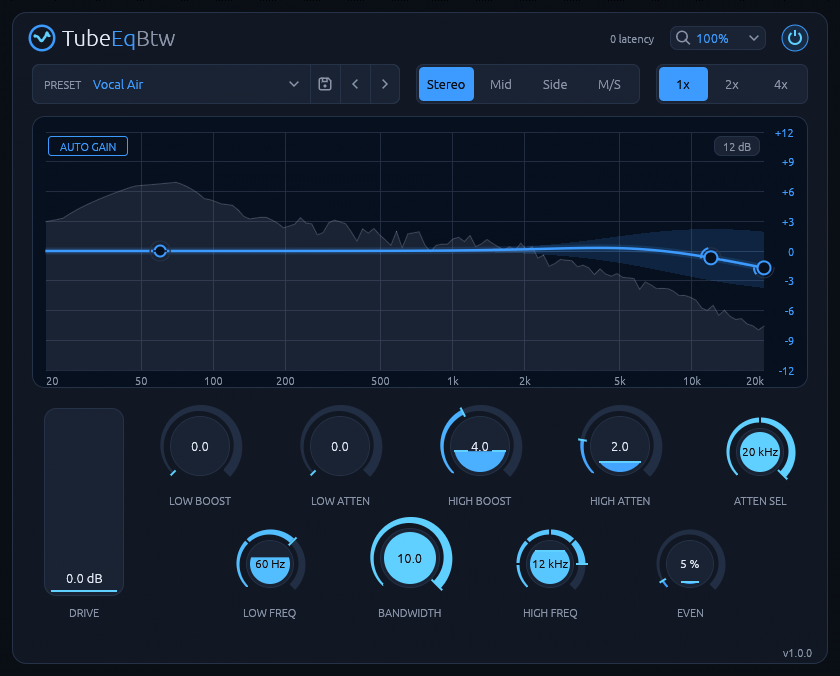
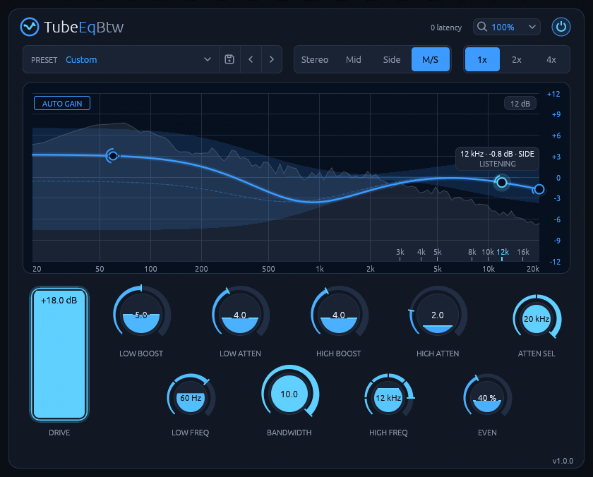

TubeEqBtw manual
A passive program EQ with a tube stage: broad, gentle curves for a mix, drums, bass or a voice, and the low boost and cut that make the kick trick.
Version 1.0.0. To install it, see the install steps.
Contents
Getting started
Put TubeEqBtw on a drum bus, a bass, a voice or the mix and play it. At the defaults every dial is at 0 and the curve is flat: you hear only the transformers and the tube pair, a trace of colour. Turn LOW BOOST up for weight, then LOW ATTEN for the kick trick; turn HIGH BOOST up for air and BANDWIDTH to make it broader. Switch AUTO GAIN on (top left of the display) to compare at the same loudness, and the power switch at the top right to hear it against the input.
Or pick a preset from the PRESET list, Kick Trick or Vocal Air, and start from there.

The controls
From the top left of the window.
| Control | Range | Default | What it does |
|---|---|---|---|
| PRESET | a list | Default | See Presets. |
| CHANNELS | Stereo, Mid, Side, M/S | Stereo | What the EQ works on. Mid and Side leave the other part as it came; M/S puts the lows on the mid and the highs on the side. |
| OVERSAMPLING | 1x, 2x, 4x | 1x | The tube's rate. 1x has no latency, 2x 43 samples, 4x 50. Not automatable. |
| Zoom | 100 to 200 % | 100 % | The window's size, kept with the project. |
| Power switch (top right) | on, off | on | Off, the input passes untouched, crossfaded over 20 ms. |
| AUTO GAIN (top left of the display) | off, on | off | Holds the loudness as the curve changes it; the chip beside it reads the gain in use. |
| Display scale (top right of the display) | 3, 6, 12, 30 dB | 12 dB | How far up and down the display shows, kept with the project. |
| DRIVE (the fader at the left) | 0 to +18 dB | 0 dB | How hard the tube pair is driven; the level stays. Its edge glows as the tube rounds the peaks. |
| LOW BOOST | 0 to 10 | 0 | A shelf that lifts the lows from LOW FREQ down. |
| LOW ATTEN | 0 to 10 | 0 | A shelf that cuts the lows, a little above where LOW BOOST lifts. |
| HIGH BOOST | 0 to 10 | 0 | A peak at HIGH FREQ: up to 18.5 dB at its sharpest, 11.2 dB at its broadest. |
| HIGH ATTEN | 0 to 10 | 0 | A shelf that cuts the highs from ATTEN SEL up. |
| ATTEN SEL | 5, 10, 20 kHz | 20 kHz | Where HIGH ATTEN's shelf starts. |
| LOW FREQ | 20, 30, 60, 100 Hz | 60 Hz | Where LOW BOOST and LOW ATTEN work. |
| BANDWIDTH | 0 (sharp) to 10 (broad) | 5 | HIGH BOOST's width. The peak lowers as it broadens. |
| HIGH FREQ | 3, 4, 5, 8, 10, 12, 16 kHz | 10 kHz | Where HIGH BOOST peaks. |
| EVEN | 0 to 100 % | 5 % | The tube pair's balance: at 0 matched, at 100 % one half alone. |
Mouse: drag a knob or the DRIVE fader up or down; hold Shift for fine steps; turn the scroll wheel
over it; double-click to reset to the default; right-click to type a value (10 kHz, 5,5, +6 dB).
Every control shows a one-line tooltip. The host can automate every parameter but OVERSAMPLING.
How to use it
The lows and the kick trick
LOW FREQ picks where the lows work: 20 and 30 Hz for the lowest octave under a bass, 60 Hz for a kick, 100 Hz for warmth. LOW BOOST lifts a shelf from there down. LOW ATTEN cuts a shelf that starts a little above it, so with both up at once the curve lifts the bottom and dips the low mids above: the kick trick. Both at 5 at 60 Hz lift 20 Hz by 2.3 dB and dip the low mids at 784 Hz. More LOW ATTEN than LOW BOOST makes it a cut with a little weight left under it.
A low boost also drives the first transformer harder, so the bass thickens a little while the top stays clean.
The highs: boost and cut
HIGH BOOST is a peak at HIGH FREQ, and BANDWIDTH sets how wide: sharp for a snare's crack at 5 kHz, broad for air over a voice at 12 or 16 kHz. As it broadens the peak lowers, as the circuit's does: 18.5 dB at the sharpest, 11.2 dB at the broadest. HIGH ATTEN cuts a shelf from ATTEN SEL up, on its own to soften a harsh top, or above a boost to ease the very top while the lift stays.

DRIVE, EVEN and OVERSAMPLING
DRIVE pushes the tube pair harder and brings the level back down by as much, so you hear the tube and not a louder signal: 0.053 % THD at −18 dBFS at DRIVE 0, 3.65 % at +18 dB. After a big move the level takes about a second to settle. The fader's edge glows as the tube rounds the peaks, fully from 3 dB.
EVEN sets the balance of the tube pair. At 0 the two halves match and their even harmonics cancel, leaving a light, odd colour; the default 5 % is a real pair's small mismatch; toward 100 % one half works alone and its second harmonic leads, rounder and thicker.
At 1x the tube runs at your session's rate with no latency, but with DRIVE up a high, loud tone aliases (−28.7 dB on a 15 kHz sine at +18 dB). 2x and 4x take that to −49.2 and −85.0 dB for 43 and 50 samples of latency, which the host compensates. Set it before playing: the host restarts the plugin to take the new latency.

AUTO GAIN
A boost almost always sounds better at first, just because it is louder. AUTO GAIN holds the loudness as the curve changes it, within 0.23 LU of the power switch's on a mix, a voice and drums, so you judge the shape and not the level. The chip beside it reads the gain it uses. It meets a move at once and learns the rest over about a second, so let it settle before you compare. It is off by default.
CHANNELS and M/S
Mid works on what the two sides share (the centre: kick, bass, voice), Side on what differs (the width), each leaving the other part as it came. M/S splits the EQ: the lows (LOW FREQ, LOW BOOST, LOW ATTEN) on the mid and the highs on the side, so you can firm up the centre's low end and open the top of the stereo image in one go. The rings' readings then say MID and SIDE.

The display and its rings
The display shows the curve heard as the bright line, each band alone dashed under it, and the output's spectrum behind. Each band is a ring on the curve, and the rings move the knobs:
- LOW's ring: the left button drags LOW BOOST, the right LOW ATTEN, up and down, from anywhere on it.
- HIGH's ring: the left button drags HIGH BOOST, the right button or the scroll wheel BANDWIDTH.
- The ring at ATTEN SEL: drag it down for HIGH ATTEN.
- Drag a ring across with the left button to snap its frequency to the next step. Double-click it to reset it.
Listening: hold a ring with the middle button, or the left button with Alt, and you hear only where its band works, for as long as you hold it. Drag it across meanwhile to hear each frequency step. Let go and the sound is exactly what it would have been. It is the quickest way to pick LOW FREQ or HIGH FREQ by ear.
Presets
The PRESET list holds Default, your favourites, the six built-in presets and then your own. The arrows
step through them, the disk saves the current settings under a name, and PRESET reads Custom once a
setting differs from every preset. A preset holds the eight dials and switches of the unit, DRIVE,
CHANNELS and EVEN; it never changes OVERSAMPLING, AUTO GAIN or the power.
| Preset | Settings | For |
|---|---|---|
| Kick Trick | 60 Hz, LOW BOOST 5, LOW ATTEN 4 | Weight under a kick, the boxy low mids taken out. |
| Vocal Air | 12 kHz broad, HIGH BOOST 4; 20 kHz, HIGH ATTEN 2 | Air over a voice, its very top eased. |
| Bus Gloss | 100 Hz, LOW BOOST 2; 10 kHz broad, HIGH BOOST 2 | A little of both ends on a mix. |
| Bass Weight | 30 Hz, LOW BOOST 6, LOW ATTEN 3 | The lowest octave lifted under a bass. |
| Snare Crack | 5 kHz sharp, HIGH BOOST 4 | A narrow lift where a snare cracks. |
| Soft Top | 10 kHz, HIGH ATTEN 3 | A gentle cut of the highs. |
Your presets are text files in ~/.local/share/TubeEqBtw/presets/, shared by every project.
Good to know
- Latency: none at 1x. 2x and 4x add 43 and 50 samples, which the host compensates.
- Mono or stereo: both work.
- Light: 0.82 % of a CPU core at the defaults, stereo at 48 kHz, about 4 % while a knob moves (each move designs a new curve), and next to nothing on silence once the last sound has died away.
- Click-free changes: a new curve glides in over 20 ms, so a switch step is a crossfade and you can automate every dial.
- At 44.1 kHz the curve can't follow the network all the way up: on the deepest high cut it is 2.24 dB off at 20 kHz (0.93 dB at 48 kHz).
- The presets are drafts, set from the curves, not yet voiced by ear.
Troubleshooting
- The plugin doesn't show up: check that the bundle is in
~/.clapor/usr/lib/clap, then rescan plugins in your DAW. It needs a CPU with AVX2. - The editor window stays black or doesn't open: check that a Vulkan driver is installed. The
vulkaninfotool fromvulkan-toolsshould list your GPU. - A boost sounds better just because it's louder: turn AUTO GAIN on; it's off by default.
- The level drifts for a second after a big move: AUTO GAIN and DRIVE's level match learn over about a second. Let it settle before comparing.
- The top fizzes with DRIVE up: set OVERSAMPLING to 2x or 4x.
- The track restarts when OVERSAMPLING changes: the host restarts the plugin to take the new latency. Set it before playing.
- Holding a ring with Alt moves the window instead: some desktops move windows with Alt and a drag. Hold the middle button instead.
- Typing a preset's name does nothing: some hosts keep keystrokes for themselves. Write the preset
file by hand: one
id valueline a parameter, such aslow_freq hz60orlow_boost 5. - A preset doesn't show up in the menu: its file must end in
.preset, and its name can't be a built-in preset's. The editor reads the folder when it opens and after a save, so reopen it after adding files by hand.